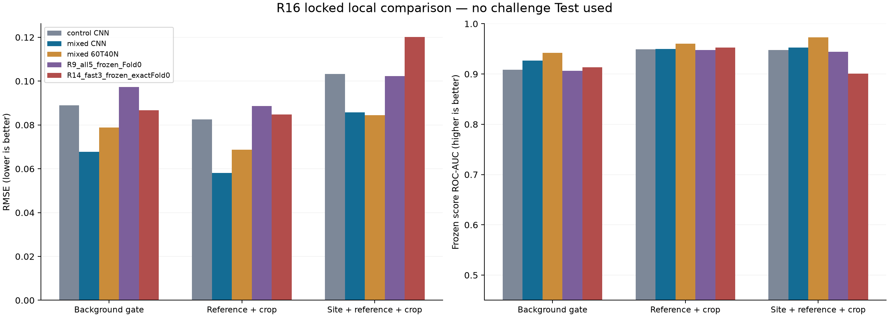
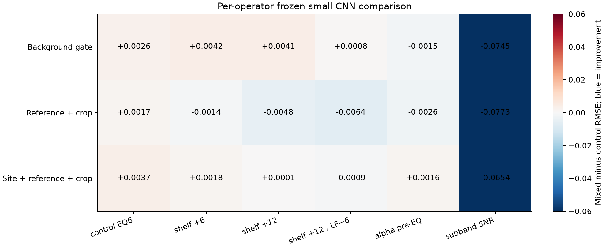
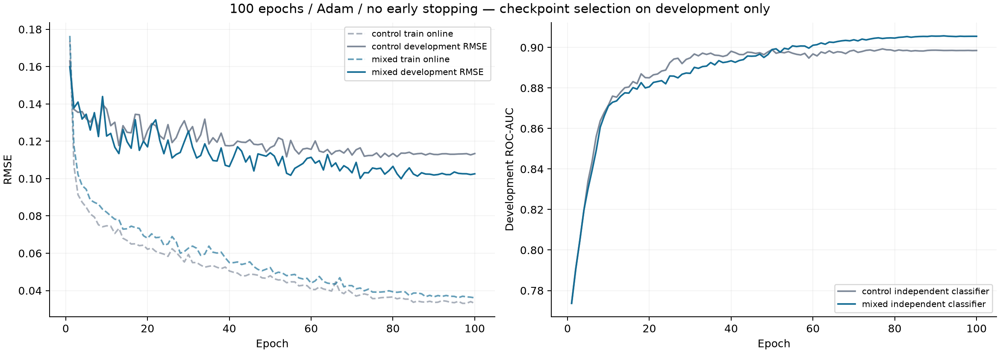

소형 모델 100epoch 완료 · 정책 고정 후 별도 평가 완료 · Test 사용 없음
| role | model | rmse | bias | auc_frozen_score |
|---|---|---|---|---|
| local_gate | control CNN | 0.088991 | -0.011067 | 0.908841 |
| local_gate | mixed CNN | 0.067740 | -0.006591 | 0.926895 |
| local_gate | mixed 60T40N | 0.078789 | -0.009578 | 0.942305 |
| local_gate | R9_all5_frozen_Fold0 | 0.097263 | -0.016908 | 0.906478 |
| local_gate | R14_fast3_frozen_exactFold0 | 0.086779 | -0.016541 | 0.913392 |
| local_report | control CNN | 0.082564 | -0.003308 | 0.949284 |
| local_report | mixed CNN | 0.058024 | 0.003235 | 0.949564 |
| local_report | mixed 60T40N | 0.068755 | -0.005137 | 0.960280 |
| local_report | R9_all5_frozen_Fold0 | 0.088718 | -0.004647 | 0.947474 |
| local_report | R14_fast3_frozen_exactFold0 | 0.084763 | -0.012201 | 0.952324 |
| domain_holdout | control CNN | 0.103227 | -0.005157 | 0.947747 |
| domain_holdout | mixed CNN | 0.085683 | 0.004790 | 0.952747 |
| domain_holdout | mixed 60T40N | 0.084430 | -0.007947 | 0.973138 |
| domain_holdout | R9_all5_frozen_Fold0 | 0.102313 | -0.012478 | 0.944531 |
| domain_holdout | R14_fast3_frozen_exactFold0 | 0.120179 | 0.002435 | 0.900833 |



17,600개 저장 행 / 고유배경5,600개 / 참조A66·B19·C34클립. local_fit는개발용, 나머지패널은전역동결후개방했습니다. 기존모델은509참조를이미학습했고domain은과거개발에서평가된사이트입니다. 본 실험은전체5-Fold OOF가아닙니다.
상세 보고서 MD · 전수 결과 JSON · 합산 지표 CSV · 동결 가중치